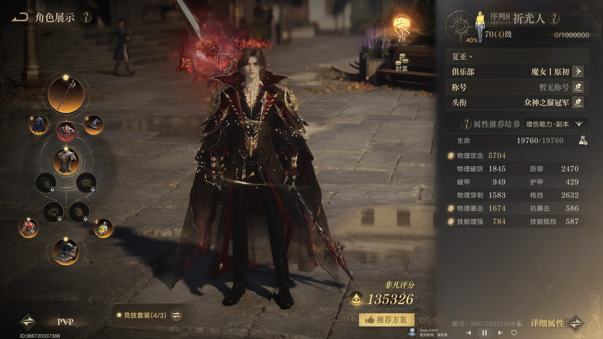
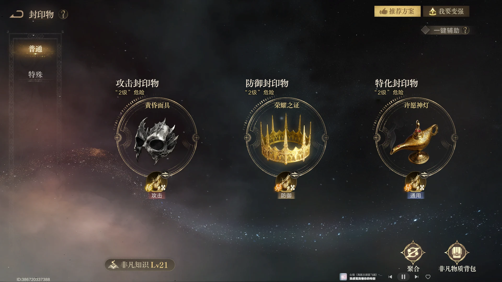
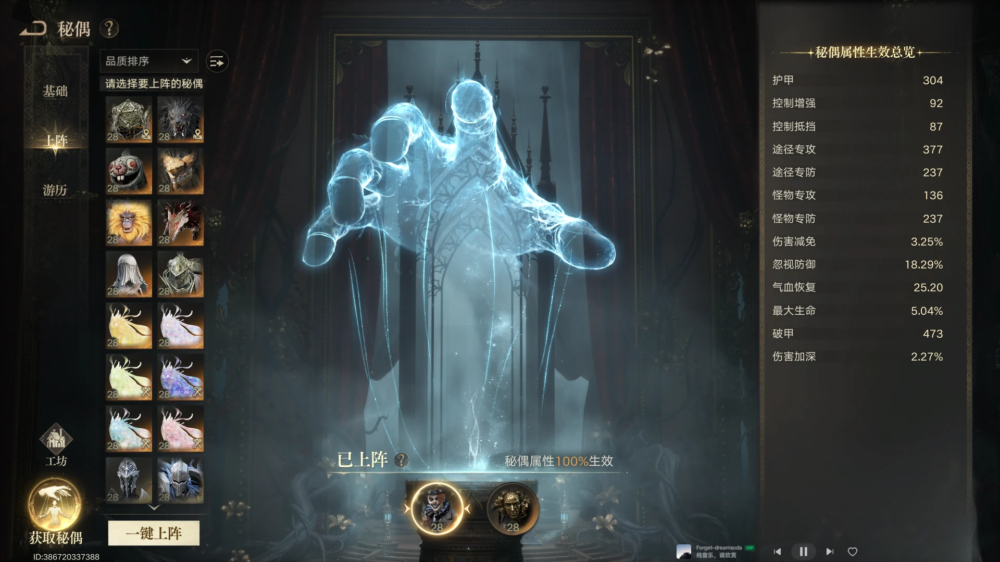
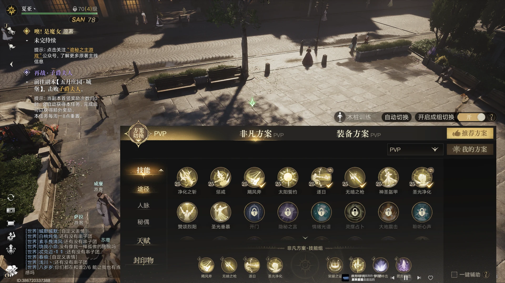

战略服装备与属性
64 装等 PVP 独珍装先满足属性阈值，再把资源投向暴击、攻击与技能增强。

穿刺先到 1600 左右
当前 PVP 不需要堆很高的穿刺，可以把穿刺资源让给其他属性。穿刺达到 1600 左右后，配合圣光净化的 buff 能到 2300 以上，已经足够应对当前环境。
攻击与技能增强看比例
当攻击和技能增强的比例大于 5：1 时，优先选择技能增强；少 1000 攻击换来 200 技能增强更划算。暴击在 buff 后超过 2000 时，大约可以达到 40%；1000—1900 多数处于 30% 区间，通常要到 2000 以上才有机会突破 40%。
装备毕业方向
装备可以按衣服独珍、戒指独珍、披风独珍，大橙武或小橙武，红胸针，百炼头、百炼项链和百炼鞋子的方向准备。
GVG 封印物与非凡物质
战略服开启六个孔位后，优先让封印物与非凡物质同时服务于 buff 覆盖和生存血量。

封印物仍选面具、皇冠、神灯
神灯的技能刷新可以提高 buff 覆盖率，用来弥补面板数值；皇冠提供的霸体足够打两套循环；面具在被动触发时提供伤害上限。
六个非凡物质的分配
攻击部位选择天灾化身、攻击愚者；防御部位选择混乱行者、防御愚者；特殊部位选择攻击愚者，剩余一个四字稀有物质待后续攻略确定。
防御位优先混乱行者
混乱行者提供的是高额生命值，不是任何防御属性带来的收益。战略服上阵后总血量可以突破 30000，而当前带防御愚者约为 19000—20000，这额外的 10000 生命收益很难用其他防御属性替代。
秘偶上阵与养成
小丑加剥面人的组合同时服务混乱行者和最大生命百分比收益，是战略服血量目标的关键。

优先小丑加剥面人
小丑上阵是为了配合混乱行者；小丑提供的最大生命百分比收益很高，也是预计把血量堆到 30000 的关键。小丑在 PVP 和 PVE 都属于通用级别，建议优先抽取并上阵。
小铁与大橙武节点
当前小铁数量为 50 块，下周也就是 9 月 21 日达到 62 块后，就可以兑换大橙武。
提前囤装备强化石
下周开启五阶强化，当前强化石大概率不够。每周体力买满并把箱子全部开满的账号，才可能刚好够用；否则要注意提前准备，避免当天无法第一时间强化到五阶。
战略服技能组与实战
大号重点练习逐日进退场和两套循环，把满技能爆发留给被动进场窗口。

逐日进场离场打两套循环
大号可以多练习用逐日进场、离场，完成两套循环和满技能爆发；同时留好技能，配合被动进场的时机把伤害打满。